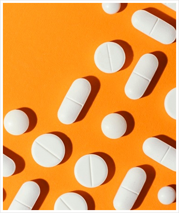

The Whistle Blown on the Best Multivitamin Supplements in the UK

Researched & Posted by
Simon White*
Which Brand Of Multivitamin Supplement Should You Buy?
Lets be honest we all want to maintain all round health and all times of the year, however its impossible to eat all the right foods to get the right minerals and vitamins that we need
With the stress and uncertainty of modern day life, unhealthy lifestyles have crept into society in what has been a turbulent few years. Many of us feel more fragile than ever, both in terms of our immune system’s ability to fight infection but also our mental health has taken a knock too.
Multivitamin products cover your bases, so no matter what you might be lacking, you know you’re in good hands. As a result of the pandemic, 1 in 3 people are now claiming to take a supplement, and, can you believe it, 70% of the UK population are now taking a supplement and most of these are multivitamins!
The question is, which among them are actually safe and effective to use?
Here at Supplement Informer, we understand how tough and overwhelming it can be to study, research, and pick the best multivitamin supplement.
That’s why we decided to make things easier for you.
We searched for the top-selling multivitamin supplement brands in 2021. We even purchased some of the top brands so we could personally test them. And, we took a deep-dive into various scientific studies, and interviewed experts and nutritionists to assess the different multi’s on the market.
Now, we are here to share with you the very interesting results.
Why Do We Need To Take Multivitamin Supplements?
People who eat a healthy diet can get adequate amounts of micronutrients from the food they ingest. However, there are several groups of people who are more likely to be deficient in vitamins and minerals. These groups include:
- ● Pregnant and breastfeeding women
- ● High consumers of alcohol (>14 units week)
- ● An aging population
- ● Take away bingers or those who rely heavily on processed foods
- ● People unable to consume 5+ fruit and vegetables daily
- ● People with poor gut health or IBS
Micronutrient deficiencies can cause specific symptoms, but broadly speaking symptoms include…
- ● Thinning hair
- ● Brittle nails
- ● Irregular periods
- ● Interrupted sleep
- ● Increase in cold and flu symptoms
- ● Lack of mental focus
- ● Sluggishness and lethargy
- ● Mood swings and frustration
Vitamins and minerals are the cogs that keep us turning! They help to ensure cells operate smoothly and play an integral role to all bodily functions including: immune function (vitamins C,D), energy and vitality (zinc, B-vitamins), hormonal regulation (B6, magnesium) and psychological function (B12, B5 and iodine).
The great thing about taking a high quality multi is that no matter how bad a food day you’ve had, you can relax in the knowledge your health is covered! .
But here’s the catch.
In the course of our research, we’ve found some information the supplement industry has been hiding, but which we’re going to expose today.
Magnesium, B-vitamins and vitamin C are water-soluble, meaning, they can easily dissolve in water. Therefore, excess quantities consumed are not stored in your body; rather they flush right out of you when you urinate. Critically then, it is important to maintain a steady flow of these valuable nutrients over an extended period of time. Typically this is achieved through a healthy diet, but this isn’t always possible eating on the go / missing meals in the busy lives we lead.
Here’s What To Look For In Multivitamin Products
and what you MUST AVOID at all
costs.
Must Haves
-
Mineral Quality:
Minerals bound to bisglycinates are typically the most effective forms for the gut to absorb. Oxides and sulphates less so.
-
Vitamin Quality:
• Methyl bound folates (folic acid) and B12 are most effective forms for the gut to absorb.
-
Pick Capsules over Tablets/Gummies:
Capsules are the cleaner option – they have no binding agents and generally include less fillers than tablets and no sugars like gummies.
-
Manufacturing Standards:
Food supplement safety and product quality are often overlooked. Look for products made to ‘GMP’ (Good Manufacturing Practice) – the gold standard. Made in the UK should also provide consumer reassurance due to strict regulations in place.
Must Avoid
-
Sugar Content:
Look out for chewable tablets, powder blends, liquids and gummies which typically contain sugars to enhance flavour. Sugars are generally proinflammatory.
-
Labels without Full Ingredient Disclosure:
Transparency is key. Know what you are consuming, so pick from a reputable brand that hides nothing.
-
Artificial Ingredients:
Artificial sweeteners, colours, preservatives, and flavourings and are known to negatively affect gut health.
-
Environmentally-Unfriendly Packaging:
Look after the planet and avoid non-recyclable packaging.
Our Research-Backed
10-Point Approach
To ensure you take only high-quality and effective multivitamin supplements for the best of health and vitality we’ve set up a dedicated “Evaluation Team” that compares and ranks each tested multivitamin according to a research-backed 10-point system. We assess each supplement brand using the point system below:
-
Potentially harmful or toxic materials.
-
Nutrient quality and potency
-
Regulated manufacturing protocols and facilities
-
Absorption and bioavailability of the Vitamin D.
-
Research and development of the micronutrients used.
-
Cost analysis.
-
Country of origin (made in the UK)
-
Returns policy and money back guarantee.
-
Customer satisfaction, including differentiating between real and fake customer reviews
-
Benefits of other ingredients.
How We Picked Our Top Choice – A Guide To Our Rankings:
After months of intensive research, interviews with multivitamin customers, and extensive personal testing, we’ve finally narrowed down hundreds of different products into our top 4 and eventually crowned a winner.
-
102
Hours of Scientific Research
-
17
Hours of Expert consultations
-
69
Customers Interviewed
Evaluation Criteria
- Taste & Ease of Use
- Value
- Results
- Synergistic Ingredients
- Company Reputation
PROS
- Delayed release capsule for superior absorption
- Vitamins in highly absorbable methyl form
- Minerals in highly absorbable bisglycinate form
- Vegan suitable including algae based vitamin D3
- Capsules are vegan friendly and easy to swallow
- No-questions-asked 90-day money-back guarantee
- Made from a reputable UK company, to GMP standards
- Next Day Delivery
CONS
- Currently only available online
- Out of stock occasionally.
The Bottom Line
Multivitamin Delayed Release by Rock & Roses has been voted #1 by our health and nutrition experts, with a 9.8 out of 10 score.
What We Loved
Rock & Roses is the only brand on the market that uses the most absorbable vitamins and minerals whilst incorporating unique delayed release capsule technology.
Rock & Roses is the only company offering a No-questions-asked 90-day money-back guarantee.
Plus, they’ve thoughtfully engineered the vitamins to provide the most optimal results.Here are a couple of benefits over other brands:
- Delayed multivitamin Release. Not only does their formula provide optimal absorption, it does so for a longer and is effective at nourishing the body throughout the day. We found many popular brands to include cheaper, less absorbable ingredients which poses the question, are they worth the money in the first place? Multivitamin Delayed Release was the most effective over the other brands we reviewed.
- Less Stomach Upsets Unlike other brands, Multivitamin Delayed Release causes less stomach upsets and less micronutrient wastage. This may be attributable to their ‘acid-resistant’ capsule technology, delivering micronutrient safely to the gut for superior absorption.
- Health cleansing and gut supportive activity Better still, this product incorporates an algae derived vitamin D and benefits from being vegan. The addition of spirulina further enhances this product’s credentials: noted for numerous health, cleansing and gut supportive activity.
- Transparent ingredients Overall, Rock & Roses is the only brand that’s completely transparent about their ingredients, and therefore the only brand we are certain it’s safe for you to consume.
What Do People Say About Multivitamin Delayed Release
I have many different vitamins and supplements from this company and love this brand. I have only been taking these multivitamins for a few days, but I have noticed an increase in energy (Particularly when I am at the gym)
- Patricia S
After taking this product im feeling more energetic which helps in my work, its very well packaged. I also would like to add that this company goes above and beyond to help. Great customer service.
- Kerry M
I take this for a busy and stressful life, not always able to cook good clean meals. My skin, sleep and energy and is significantly better. This product has given me the confidence to push harder and to accomplish more. Life is great right now!
- Katie P
There’s just one small thing…
Rock & Roses is a small-sized company right now. Compared to other household- name brands, they don’t have a massive inventory of Multivitamin Delayed Release.
In other words, with higher demand than the supply, their Multivitamin Delayed Release inventory sells out fast.
The good news is:
If you’re reading this page, you can still take advantage and stock up on bottles of Multivitamin Delayed Release.
So, before Multivitamin Delayed Release sells out fast… which is possible within 24 hours, Rock & Roses highly recommends that you buy and stock up now.
Manufacturing may take 3-6 months depending on the availability of ingredients. And with the delay of shipment due to the current worldwide situation, it may take customers 10 or more weeks before they can get bottles of the Multivitamin Delayed Release.
So, before you miss out on getting long lasting energy, health and vitality place your order of Multivitamin Delayed Release now.
Remember: you are covered by the company’s no-questions-asked 90-day money-back guarantee.
With so many people praising Multivitamin Delayed Release for its ability to change lives, the best decision is to get your bottles of the Multivitamin Delayed Release now before it runs out of stock again. Click the button below to try the Multivitamin Delayed Release risk-free.
PROS
- Nice use of additional of botanicals
- Good customer service
- Vegan suitable
- Made in the UK
CONS
- Vitamins and minerals less effective
- Tablets contain undesirable binders and fillers
- No delayed release mechanism
- Difficult to open pot
PROS
- Good value
- Easy to swallow tablet
- Vegan suitable
- Made in the UK
CONS
- Nutrients poorly absorbed
- Tablets are heavy on artificial bulking agents
- No delayed release mechanism
PROS
- Reputable brand
- Easy to swallow tablet
- Good value
- Made in the UK
CONS
- Nutrients poorly absorbed
- Tablets which are heavy on artificial bulking agents
- No delayed release mechanism